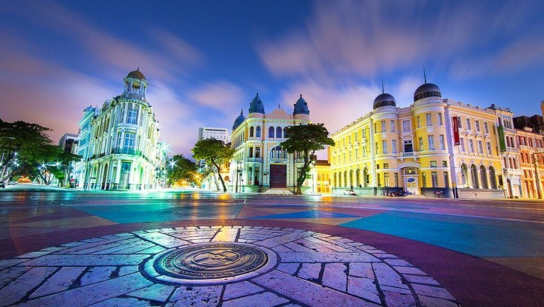

Marco Zero
Está esperando o que para conhecer o Recife?
O Marco Zero do Recife, localizado na Praça Rio Branco, é o ponto de referência inicial da cidade. Além de sua importância histórica, é um local culturalmente significativo, frequentemente usado para eventos e comemorações. Oferece uma vista do Rio Capibaribe e está cercado por edifícios históricos, sendo um destino turístico popular na cidade.